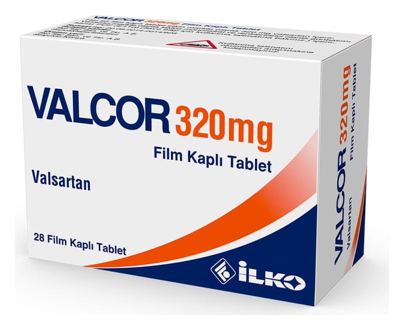

Valcor 320 mg Film Kaplı Tablet, Film Kaplı Tablet, 28 Adet

Ne için kullanılır
KT · Bölüm 1VALCOR, 28 adet film kaplı tablet içeren blister ambalajda takdim edilmektedir. Her bir film kaplı tablet, 320 mg valsartan içerir. VALCOR, yüksek kan basıncının kontrol edilmesine yardımcı olan anjiyotensin II antagonistleri olarak bilinen ilaç sınıfına aittir.
VALCOR 6-18 yaş arasındaki çocuklar ve ergenlerin yüksek kan basıncı ile yetişkinlerde yüksek kan basıncının düşürülmesinde kullanılır. Tek başına veya yüksek tansiyon tedavisinde kullanılan diğer ilaçlarla birlikte kullanılabilir.
VALCOR’un ne şekilde etki ettiğine veya bu ilacın size neden reçete edildiğine ilişkin sorularınız varsa, doktorunuza danışın.